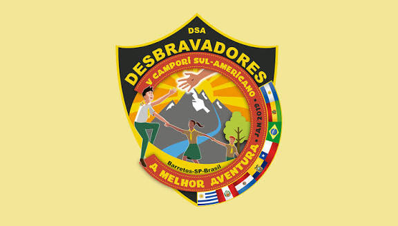

Camporis · V · 2019
V Campori Sul-Americano de Desbravadores
Em 2019 o V Campori voltou a Barretos com o tema A melhor aventura e, pela primeira vez na série, em duas edições: Alpha e Ômega.

- Situação
- Realizado
- Local
- Parque do Peão, Barretos, São Paulo, BrasilManual oficial de orientações do V Campori.
- Datas
- Alpha: 8 a 13 de janeiro. Ômega: 15 a 20 de janeiro de 2019
- Tema oficial
- A melhor aventura
- Direção
- Pr. Udolcy ZukowskiAssina o manual como diretor do Ministério de Desbravadores e Aventureiros da Divisão Sul-Americana.
O manual oficial chama o encontro de V Campori Sul-Americano de Desbravadores e fixa o tema A melhor aventura. O lugar é o Parque do Peão, em Barretos. A edição Alpha foi de 8 a 13 de janeiro de 2019; a Ômega, de 15 a 20 de janeiro.
O manual convida clubes da Argentina, Bolívia, Brasil, Chile, Equador, Paraguai, Peru e Uruguai, além de delegações de outras divisões. Entre os princípios do acampamento está a frase: o Desbravador é o centro.
Curiosidades com fonte
- O emblema do campori saiu de um concurso entre os oito países. O manual registra como vencedor Sebastián Gabilán González, do Clube Rayen Antú, em Santa Juana, no Chile.
- A abertura em duas edições foi a forma encontrada para receber o crescimento do ministério sem colocar todos os clubes no parque ao mesmo tempo.